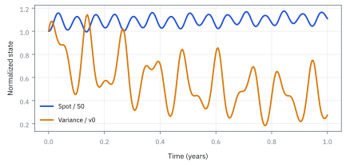

14.7 Stochastic Volatility and the Heston Model
แบบจำลอง Heston ให้ variance ของหุ้นเดินสุ่มและถูกดึงกลับหาระดับระยะยาว ราคา option จึงขึ้นกับ variance เฉลี่ยตลอดอายุ และ smile เอียงเองเมื่อหุ้นกับความผันผวนเดินสวนทางกัน
หุ้นราคา \$100 ความผันผวนตอนนี้ 30% ต่อปี แต่โต๊ะเชื่อว่ามันจะถูกดึงกลับหา 20% ด้วยความเร็ว 2 ต่อปี ดอกเบี้ย 3% ปันผล 1% ต้องตั้งราคา call ATM strike 100 อายุ 1 ปี เด็กฝึกงานเอาค่ากลางของ 30% กับ 20% คือ 25% ใส่สูตร Black–Scholes ได้ \$10.76 ราคานี้ใช้ได้ไหม ถ้าไม่ได้ ควรเป็นเท่าไร?
ลองตอบก่อนเปิดเฉลย
แพงไป \$0.33 ต่อหุ้น (3.1%) สิ่งที่ถูกดึงกลับเป็นเส้นโค้ง exponential คือ variance ไม่ใช่ความผันผวน และ option อายุ 1 ปีใช้ variance เฉลี่ยตลอดปี ซึ่งคือ 0.0616 หรือความผันผวน 24.82% ให้ Black–Scholes \$10.69 แต่ยังไม่จบ ความผันผวนเองก็สุ่ม และมักขึ้นตอนหุ้นลง แบบจำลอง Heston จึงให้ \$10.43 เท่ากับ implied volatility 24.15% ส่วนต่าง \$0.26 จากราคาที่ความผันผวนเฉลี่ยมาจากความสุ่มของ variance \$0.18 และจากการเดินสวนทางกับหุ้น \$0.08
สิ่งที่เราจะสร้าง
14.4 และ 14.5 แสดงว่าตลาดไม่ได้ใช้ความผันผวนตัวเดียว put strike ต่ำแพงกว่า (skew) และแต่ละอายุมีระดับของตัวเอง (term structure) Black–Scholes ของ 14.2 ถือ $\sigma$ คงที่ จึงสร้างทั้งสองอย่างไม่ได้ หน้านี้ให้ variance ของหุ้นเป็นตัวแปรสุ่มที่มีสมการของตัวเอง ตามแบบจำลองของ Heston (1993) แล้วดูว่า term structure และ skew เกิดขึ้นเองได้อย่างไร
เริ่มจากเดินแรงดึงกลับด้วยมือ เขียนแบบจำลองสองสมการ หาค่าคาดหมายของ variance ทั้งที่ปลายทางและเฉลี่ยตลอดอายุ ตรวจเงื่อนไข Feller และวิธีจำลอง จากนั้นสร้างสมการตั้งราคาด้วย Itô สองตัวแปรของ 13.5 ยุบเหลือสอง ODE ด้วย characteristic function แปลงกลับเป็นราคา ตรวจด้วย Monte Carlo อธิบายว่าทำไมราคาต่ำกว่า Black–Scholes ที่ความผันผวนเฉลี่ย และจบที่ smile ที่แบบจำลองสร้าง
ทั้งหน้าใช้ชุดตัวเลขเดียว (สมมติ เป็นชุดตัวอย่าง ไม่ได้ปรับจากตลาดจริง): $S_0=K=100$, $T=1$ ปี, $r=3\%$, $q=1\%$, $v_0=0.09$, $\theta=0.04$, $\kappa=2$, $\xi=0.3$ และ $\rho=-0.7$
ศัพท์ที่ใช้ในหัวข้อนี้
- Stochastic volatility
- แบบจำลองที่ให้ความผันผวน (ในที่นี้คือ variance) เป็นตัวแปรสุ่มที่มีสมการของตัวเองแทนค่าคงที่ ใช้สร้าง smile และ term structure ที่ Black–Scholes สร้างไม่ได้ และทำให้ความผันผวนของพรุ่งนี้ไม่แน่นอน
- Mean reversion ($\kappa$ และ $\theta$)
- แรงที่ดึง variance กลับหาระดับระยะยาว $\theta$ ยิ่งห่างยิ่งดึงแรง $\kappa$ คือความเร็วของแรงนี้ มีไว้เพราะความผันผวนจริงไม่อยู่สูงหรือต่ำถาวร
- Vol-of-vol ($\xi$)
- ขนาดความสุ่มของ variance เอง ยิ่งมาก variance เฉลี่ยตลอดอายุยิ่งกระจาย smile ยิ่งโค้ง และราคา ATM ยิ่งต่ำกว่า Black–Scholes ที่ความผันผวนเฉลี่ย
- Correlation $\rho$ และ leverage effect
- $\rho$ คือ correlation ระหว่างแรงสุ่มของหุ้นกับของ variance ในตลาดหุ้นมักติดลบ หุ้นลงแล้วความผันผวนขึ้น ซึ่งเรียกว่า leverage effect ตัวนี้ทำให้ smile เอียง
- Characteristic function
- ค่าคาดหมาย $\mathbb E[e^{iu\log S_T}]$ ที่เก็บการแจกแจงทั้งหมดของ $\log S_T$ ไว้ Heston เขียน density เป็นสูตรปิดไม่ได้ แต่เขียนตัวนี้ได้ แล้วแปลงกลับเป็นราคาด้วยอินทิกรัลตัวเดียว
- Calibration
- การเลือก $v_0$, $\theta$, $\kappa$, $\xi$, $\rho$ ให้ราคาจากแบบจำลองใกล้ราคาตลาดทั้งผืนที่สุด ทำทุกวัน ค่าที่ได้เป็นค่าภายใต้ $\mathbb Q$ ไม่ใช่ค่าสถิติจากข้อมูลย้อนหลัง
- Full-truncation Euler
- วิธีจำลองทีละช่วงเวลาที่ใช้ $\max(v,0)$ ทุกที่ที่ต้องถอดรากหรือคิด drift มีไว้เพราะการเดินเป็นก้าวทำให้ $v$ ติดลบได้ แม้สมการจริงจะไม่ติดลบ
สัญลักษณ์และหน่วย
| สัญลักษณ์ | ความหมาย | หน่วย |
|---|---|---|
| $S_t,\ x_t=\log S_t$ | ราคาหุ้น และ log ของราคา | USD, ไม่มีหน่วย |
| $v_t$ | variance ณ ขณะนั้น (ความผันผวนคือ $\sqrt{v_t}$) | ต่อปี |
| $v_0,\ \theta$ | variance วันนี้ และระดับระยะยาว | ต่อปี |
| $\kappa$ | ความเร็วของแรงดึงกลับ | ต่อปี |
| $\xi$ | vol-of-vol ขนาดความสุ่มของ variance | ต่อปี |
| $\rho$ | correlation ระหว่าง $dW^S$ กับ $dW^v$ | ไม่มีหน่วย |
| $W^S,\ W^v,\ W^\perp$ | แรงสุ่มของหุ้น ของ variance และตัวอิสระที่ใช้ประกอบ | รากที่สองของปี |
| $r,\ q$ | ดอกเบี้ยและอัตราปันผลต่อเนื่อง | ต่อปี |
| $T,\ \tau=T-t,\ h$ | อายุ เวลาที่เหลือ และขนาดก้าวของการจำลอง | ปี |
| $\bar v_T$ | variance เฉลี่ยตลอดอายุ $\frac1T\int_0^Tv_t\,dt$ | ต่อปี |
| $\varphi(u),\ A,\ B$ | characteristic function และสองสัมประสิทธิ์ของมัน | ไม่มีหน่วย, ไม่มีหน่วย, ปี |
| $P_1,\ P_2$ | น้ำหนักของขาหุ้นและขา strike (บทเดียวกับ $\Phi(d_1)$, $\Phi(d_2)$) | ไม่มีหน่วย |
ขั้นที่ 1 — ลองด้วยมือ: variance ถูกดึงกลับทีละไตรมาส
โจทย์ให้อะไรมาบ้าง: variance วันนี้ $v_0=0.09$ (ความผันผวน 30%) ระดับระยะยาว $\theta=0.04$ (20%) ความเร็ว $\kappa=2$ ต่อปี ปิดความสุ่มไว้ก่อน กฎคือทุกช่วงเวลา $h$ variance ขยับเข้าหา $\theta$ เป็นสัดส่วน $\kappa h$ ของระยะห่าง ใช้ $h=0.25$ ปี จึง $\kappa h=0.5$
คำตอบ: ระยะห่างจาก 0.04 หดครึ่งหนึ่งทุกไตรมาส 0.05, 0.025, 0.0125, 0.00625, 0.003125 ปลายปี variance เหลือ 0.043125 แต่ค่าเฉลี่ยของค่าต้นไตรมาสทั้งสี่ $\bar v_{\rm q}$ คือ 0.0634 สูงกว่าปลายปีมาก เพราะครึ่งปีแรก variance ยังสูง ขั้นที่ 3 จะแสดงว่าราคา option อายุ 1 ปีขึ้นกับค่าเฉลี่ยแบบนี้ ไม่ใช่ค่าปลายทาง
ตรวจเองใน 10 วินาที: ก้าวไตรมาสหยาบไป หดครึ่งสี่ครั้งเหลือ $0.5^4=0.0625$ ของระยะเดิม ถ้าซอยเป็น 12, 52 และ 252 ก้าว ค่าปลายปีคือ 0.045608, 0.046505 และ 0.046713 ลู่เข้าหา 0.046767 ของขั้นที่ 3 ซึ่งใช้ $e^{-2}=0.1353$
ขั้นที่ 2 — แบบจำลอง Heston: สองสมการและแรงสุ่มที่เกาะกัน
ขั้นที่ 1 ตัดความสุ่มทิ้ง ตอนนี้ใส่กลับ บรรทัดแรกคือ GBM ของ 10.1 ภายใต้ $\mathbb Q$ (drift $r-q$ ตาม 14.2) ต่างแค่ความผันผวนคือ $\sqrt{v_t}$ ที่เปลี่ยนตามเวลา บรรทัดที่สองคือแรงดึงกลับของขั้นที่ 1 บวกแรงสุ่มขนาด $\xi\sqrt{v_t}$ รูปรากที่สองแบบเดียวกับ Cox–Ingersoll–Ross ใน 13.4 สองบรรทัดนี้เป็นนิยามของแบบจำลอง ส่วนสามบรรทัดล่างสร้างแรงสุ่มที่มี correlation $\rho$ จากแรงอิสระสองตัวแบบ Cholesky ของ 8.9 แล้วตรวจขนาด
ทำไมต้องเป็นรากที่สอง: เมื่อ $v$ เข้าใกล้ศูนย์ แรงสุ่ม $\xi\sqrt v$ เล็กลงเอง ขณะที่แรงดึง $\kappa\theta$ ยังดันขึ้น variance จึงไม่ถูกผลักลงไปติดลบ และรูปนี้คือรูปที่ทำให้ขั้นที่ 7 ยุบเป็น ODE ได้ หน่วยของ $\xi$ คือต่อปี เพราะ $\xi\sqrt v\,dW$ ต้องมีหน่วยเดียวกับ $dv$ และ $\sqrt v\,dW$ ไม่มีหน่วย
สองบรรทัดล่างใช้กฎคูณของ 13.5: $(dW)^2=dt$ และ $dW^S dW^\perp=0$ เพราะอิสระกัน น้ำหนัก $\sqrt{1-\rho^2}$ เป็นตัวเดียวที่ทำให้ขนาดยังเป็น $dt$ พร้อมกับให้ correlation เท่ากับ $\rho$ ค่า $\kappa$, $\theta$, $\xi$, $\rho$ ทั้งหมดเป็นค่าภายใต้ $\mathbb Q$ ที่ใช้ตั้งราคา
ขั้นที่ 3 — ค่าคาดหมายของ variance: ที่ปลายทางและเฉลี่ยตลอดอายุ
ขั้นที่ 1 เดินแรงดึงกลับแบบหยาบ ขั้นนี้หาคำตอบแม่นยำ เอาค่าคาดหมายทั้งสองข้างของสมการ variance พจน์สุ่มหายไปเพราะค่าคาดหมายของ Itô integral เป็นศูนย์ (13.3) เหลือ ODE ธรรมดาแบบเดียวกับ Vasicek ใน 13.4 แล้วเฉลี่ยตลอดอายุ เพราะนั่นคือสิ่งที่ option ใช้
$y'=-\kappa y$ คือสมการที่คำตอบเป็น exponential: ระยะห่างจาก $\theta$ หดด้วยอัตรา $\kappa$ และหายไปครึ่งหนึ่งทุก $\ln2/\kappa=0.3466$ ปี (ราว 4.2 เดือน) บรรทัดที่สี่สลับค่าคาดหมายกับอินทิกรัลได้เพราะทั้งคู่เป็นการบวกเชิงเส้น แล้วใช้ $\int_0^Te^{-\kappa t}dt=(1-e^{-\kappa T})/\kappa$
ตัวประกอบ $(1-e^{-\kappa T})/(\kappa T)$ อยู่ระหว่าง 0 กับ 1: เข้าใกล้ 1 เมื่ออายุสั้น option สั้นจึงเห็น $v_0$ และเข้าใกล้ 0 เมื่ออายุยาว option ยาวจึงเห็น $\theta$ ที่ 1 ปี variance ปลายทาง 0.0468 แต่ค่าเฉลี่ย 0.0616 ความผันผวน 25% ของเด็กฝึกงานจึงไม่ใช่ทั้งสองค่า
Figure 14.7a — variance ที่คาดไว้ ณ เวลา t เทียบกับค่าเฉลี่ยสะสม

ขั้นที่ 4 — term structure ที่แบบจำลองสร้างเอง
โจทย์ให้อะไรมาบ้าง: สูตรของขั้นที่ 3 กับชุดตัวเลขเดิม หาความผันผวนเฉลี่ยที่คาด $\sqrt{\mathbb E[\bar v_T]}$ ที่อายุ 3 เดือน 1 ปี และ 5 ปี โดยใช้ $(1-e^{-0.5})/0.5=0.786939$ และ $(1-e^{-10})/10=0.099995$
คำตอบ: ความผันผวนเฉลี่ยที่คาดลดจาก 28.17% ที่ 3 เดือน เป็น 24.82% ที่ 1 ปี และ 21.21% ที่ 5 ปี คือ term structure ขาลงแบบที่ตลาดมีหลังช่วงผันผวนสูง (14.5) โดยไม่ต้องใส่ความผันผวนแยกทีละอายุ $v_0$ คุมปลายสั้น $\theta$ คุมปลายยาว $\kappa$ คุมว่าเปลี่ยนจากตัวหนึ่งไปอีกตัวเร็วแค่ไหน implied volatility ATM จริงของแบบจำลองต่ำกว่าตัวเลขนี้เล็กน้อย ขั้นที่ 11 อธิบายว่าทำไม
ตรวจเองใน 10 วินาที: ในสูตร $\kappa$ กับ $T$ มาคู่กันเป็น $\kappa T$ เสมอ $\kappa=0.5$ ที่ 4 ปีจึงให้ 24.82% เท่ากับ $\kappa=2$ ที่ 1 ปี เส้น $\kappa=0.5$ ใน Figure 14.7c คือเส้น $\kappa=2$ ที่ยืดแกนเวลาออกสี่เท่า
Figure 14.7b — variance วันนี้คุมอายุสั้น ระดับระยะยาวคุมอายุยาว

Figure 14.7c — ความเร็วของแรงดึงกลับกำหนดความชันของ term structure

ขั้นที่ 5 — เงื่อนไข Feller และการจำลองทีละวัน
ก่อนจำลองต้องรู้สองเรื่อง: variance ในสมการจริงแตะศูนย์ได้ไหม และเมื่อเดินเป็นก้าวจะกันค่าติดลบอย่างไร เรื่องแรกใช้ผลของ Feller (1951) ที่รับมาใช้โดยไม่พิสูจน์ในที่นี้: ถ้า $2\kappa\theta\ge\xi^2$ แรงดันขึ้นชนะแรงสุ่มใกล้ศูนย์ และ variance ไม่แตะศูนย์ เรื่องที่สองเรานิยามวิธีเดินแบบ full truncation ส่วนสมการของ $x=\log S$ มาจาก Itô บน log ใน 13.4 ซึ่งให้ drift $r-q-\tfrac12v$
ชุดนี้ผ่าน Feller สบาย ๆ ($\xi$ ขึ้นได้ถึง $\sqrt{0.16}=0.40$) แต่ $\xi=0.6$ ไม่ผ่าน ($0.16\lt0.36$) ไม่ผ่านไม่ได้แปลว่าแบบจำลองใช้ไม่ได้ แปลว่า variance แตะศูนย์ได้แล้วเด้งกลับ ซึ่งทำให้การจำลองยากขึ้น
ในการจำลองของขั้นที่ 10 ($h=1/252$, 50,000 เส้นทาง) ค่าดิบ $v_{j+1}$ ติดลบ 0.0045% ของก้าวทั้งที่ชุดนี้ผ่าน Feller เพราะก้าวที่มีขนาดจำกัดกระโดดข้ามศูนย์ได้ ที่ $\xi=0.6$ เป็น 3.75% ของก้าว $\max(v,0)$ ทำให้ถอดรากได้เสมอ และค่าดิบยังถูกเก็บเป็นสถานะของก้าวถัดไป
จุดที่พลาดง่ายที่สุด: $Z_1$ ตัวเดียวกันต้องอยู่ในทั้งสองบรรทัด ถ้าสุ่มตัวใหม่ให้หุ้น correlation จะหายไปเงียบ ๆ
Figure 14.7d — หุ้นกับ variance บนเส้นทางเดียวที่ใช้แรงสุ่มแบบกำหนดตายตัว

ขั้นที่ 6 — สมการตั้งราคาเมื่อ variance เป็นตัวแปรที่สอง
ใน 14.1 ราคา option เป็นฟังก์ชันของ $S$ และ $t$ ตอนนี้ variance เปลี่ยนได้ ราคาจึงเป็น $C(t,S,v)$ ภายใต้ $\mathbb Q$ ราคาของสิ่งที่ซื้อขายได้ต้องโตเฉลี่ยในอัตรา $r$ (14.2) จึงหา drift ของ $dC$ ด้วย Itô สองตัวแปรของ 13.5 แล้วตั้งให้เท่ากับ $rC$
บรรทัดที่สี่และห้ามาจากขั้นที่ 2: ส่วนสุ่มของ $dS$ คือ $S\sqrt v\,dW^S$ ยกกำลังสองได้ $S^2v\,dt$ ส่วนสุ่มของ $dv$ ยกกำลังสองได้ $\xi^2v\,dt$ และผลคูณได้ $S\sqrt v\,\xi\sqrt v\,\rho\,dt$ พจน์ที่เหลือมี $dW$ ซึ่งค่าคาดหมายเป็นศูนย์ บรรทัดสุดท้ายคือ PDE ของ Heston
เทียบกับ 14.1 มีสามพจน์ใหม่: drift ของ $v$ ความโค้งตาม $v$ และพจน์ไขว้ $\rho\xi vSC_{Sv}$ ซึ่งเป็นที่เดียวที่ $\rho$ เข้ามา ถ้า $\xi=0$ และ $v_0=\theta$ สมการกลับเป็นของ 14.1
มีแหล่งสุ่มสองตัวแต่หุ้นตัวเดียว hedge ด้วยหุ้นอย่างเดียวจึงไม่พอ ต้องใช้ option อีกตัว และราคาของความเสี่ยงความผันผวนถูกรวมอยู่ใน $\kappa$, $\theta$ ของ $\mathbb Q$ แล้ว
ขั้นที่ 7 — characteristic function ยุบ PDE เหลือสอง ODE
PDE สองมิติแก้ตรง ๆ ไม่ได้ Heston จึงอ้อม: หา characteristic function ของ $x_T=\log S_T$ แทนราคา มันเป็นค่าคาดหมายภายใต้ $\mathbb Q$ เหมือนราคา จึงทำตาม PDE เดียวกัน (ไม่มีการคิดลด และเขียนด้วย $x$) แล้วเดารูป exponential ที่เป็นเส้นตรงใน $x$ และ $v$ ถ้าเดาถูก สมการต้องยุบลงได้
ทำไม $f$ ทำตาม PDE เดียวกัน: $f$ เป็นค่าคาดหมายของฟังก์ชันของ $x_T$ เหมือนราคาที่ยังไม่คิดลด จึงไม่มีพจน์ $-rC$ และเพราะ $\tau=T-t$ นับถอยหลัง $f_t=-f_\tau$ drift ของ $x$ คือ $r-q-\tfrac12v$ ตามขั้นที่ 5 และ $(dx)^2=v\,dt$, $dx\,dv=\rho\xi v\,dt$ ตามขั้นที่ 2
แทนรูปที่เดาลงไป อนุพันธ์ทุกตัวหารด้วย $f$ เหลือแค่ $iu$, $-u^2$, $B$, $B^2$, $iuB$ ทั้งสองข้างเป็นเส้นตรงใน $v$ และต้องเท่ากันทุกค่าของ $v$ สัมประสิทธิ์หน้า $v^0$ และ $v^1$ จึงต้องเท่ากันทีละคู่
ผลคือสอง ODE ตัวของ $B$ (Riccati เพราะมี $B^2$) แก้ได้เองก่อน แล้ว $A$ ได้จากการอินทิเกรต $\kappa\theta B$ เงื่อนไข $A(0)=B(0)=0$ มาจาก $f=e^{iux}$ ในวันหมดอายุ
ตรวจทันที: $u=-i$ ให้ $u^2+iu=-1+1=0$ สมการของ $B$ จึงได้ $B=0$ ตลอด และ $A=(r-q)T$ นั่นคือ $f=Se^{(r-q)T}=\mathbb E^{\mathbb Q}[S_T]$ ตรงกับ forward ของ 14.2
ขั้นที่ 8 — คำตอบของสอง ODE และการตรวจด้วยเครื่อง
สมการของ $B$ เป็น Riccati ที่มีคำตอบปิด (Heston 1993) ขั้นนี้รับคำตอบมาใช้ในรูปที่คำนวณได้เสถียร ($g$ สร้างจาก $b-d$ และใช้ $e^{-dT}$) แล้วไม่เชื่อเปล่า ๆ แต่ตรวจกับการเดิน ODE ของขั้นที่ 7 ด้วย RK4 ที่ $u=1$
RK4 2,000 ก้าวจาก $\tau=0$ ถึง 1 ที่ $u=1$ ให้ $A$ และ $B$ ต่างจากสองบรรทัดล่างไม่ถึง $10^{-15}$ และที่ $u=-i$ สูตรให้ $\varphi(-i)=102.0201=100e^{0.02}$ เท่ากับ forward สองการตรวจนี้แทนการพิสูจน์ด้วยมือซึ่งยาวเกินหน้านี้
ทำไมต้องรูปนี้: รูปในบทความของ Heston เองใช้ $e^{+dT}$ และ log ของจำนวนเชิงซ้อนในรูปนั้นข้ามกิ่งได้เมื่ออายุยาว ราคาจะกระโดดโดยไม่มีอะไรเตือน รูปที่ใช้ที่นี่เป็นรูปที่ Albrecher และคณะ (2007) แสดงว่าไม่ข้ามกิ่ง
ขั้นที่ 9 — จาก characteristic function เป็นราคา call
call คือขาหุ้นลบขา strike เหมือน 14.2: $C=e^{-rT}\mathbb E^{\mathbb Q}[S_T\mathbf 1_{S_T\gt K}]-Ke^{-rT}\mathbb Q(S_T\gt K)$ ต้องหาสองตัวนี้จาก $\varphi$ สูตรกลับบรรทัดแรก (Gil-Pelaez) รับมาใช้จากทฤษฎี Fourier ที่ 21.3 สร้างเต็ม ส่วน $\varphi_1$ ของขาหุ้นได้จากการถ่วงทุกผลลัพธ์ด้วย $S_T$
$P_1$ ใช้สูตรกลับตัวเดียวกันกับ $\varphi_1$: $e^{i(u-i)x}=e^{iux}e^{x}=e^{iux}S_T$ การแทน $u-i$ จึงเท่ากับถ่วงทุกผลลัพธ์ด้วย $S_T$ และหารด้วย $\varphi(-i)=\mathbb E[S_T]=F$ ให้น้ำหนักรวมเป็นหนึ่ง ขาหุ้นจึงเป็น $e^{-rT}FP_1=S_0e^{-qT}P_1$ $P_1$ กับ $P_2$ เล่นบทเดียวกับ $\Phi(d_1)$ และ $\Phi(d_2)$ ของ 14.2
ตรวจสูตรกลับกับกรณีที่รู้คำตอบ: ใส่ characteristic function ของ lognormal ที่ความผันผวน 24.82% ได้ 0.482635 เท่ากับ $\Phi(d_2)$ ของ Black–Scholes ทุกหลักที่พิมพ์ ส่วน Heston ให้ $P_2=0.535922$ สูงกว่า: เมื่อ $\rho$ ติดลบ การแจกแจงเบ้ซ้าย หางซ้ายอ้วน โอกาสจบเหนือ 100 ไม่มากจึงเพิ่มขึ้น
อินทิกรัลคิดด้วย Simpson 3,000 ช่วงบน 0 ถึง 150 ขนาดของ $\varphi$ ที่ $u=40$ เหลือ $2.4\times10^{-6}$ และที่ 60 เหลือ $1.0\times10^{-9}$ การตัดที่ 150 จึงไม่เสียอะไร ราคา \$10.4348 เท่ากับ implied volatility 24.15%
ขั้นที่ 10 — ตรวจด้วย Monte Carlo โดยมีหุ้นเป็นตัวช่วย
โจทย์ให้อะไรมาบ้าง: จำลองตามขั้นที่ 5 วันละก้าว ($h=1/252$) 50,000 เส้นทาง seed 14 ให้ $Y=e^{-rT}(S_T-100)^+$ และ $X=e^{-rT}S_T$ ค่าเฉลี่ยจริงของ $X$ รู้แน่นอนว่าเป็น $S_0e^{-qT}=99.0050$ ถ้าเส้นทางที่สุ่มได้ให้ $\bar X$ พลาดไป $\bar Y$ ก็พลาดไปทางเดียวกัน จึงหักส่วนที่พลาดออกด้วยความชัน $\beta$ (control variate)
คำตอบ: ค่าเฉลี่ยตรง ๆ 10.5968 ห่างจาก 10.4348 ถึง 2.5 เท่าของ SE เพราะเส้นทางชุดนี้บังเอิญให้หุ้นขึ้นมากไป (99.2366 แทน 99.0050) พอหักด้วย $\beta$ ได้ 10.4727 ± 0.0313 ห่างจากราคาของขั้นที่ 9 เพียง 1.2 SE และ SE ลดลงครึ่งหนึ่ง สองวิธีที่ไม่เกี่ยวกันเลยจึงยืนยันราคาเดียวกัน
ตรวจเองใน 10 วินาที: $(10.4727-10.4348)/0.0313=1.21$ ส่วน $\beta=0.54$ ต้องอยู่ระหว่าง 0 กับ 1 เพราะ payoff ของ call ขึ้นตามหุ้นไม่เร็วกว่าหนึ่งต่อหนึ่ง และไม่เคยลงเมื่อหุ้นขึ้น
ขั้นที่ 11 — ทำไมราคาต่ำกว่า Black–Scholes ที่ความผันผวนเฉลี่ย
โจทย์ให้อะไรมาบ้าง: ราคา Heston 10.4348 ต่ำกว่า Black–Scholes ที่ 24.82% คือ 10.6938 อยู่ \$0.26 เริ่มจากกรณี $\rho=0$ ซึ่งคิดด้วยเหตุผลได้ ให้ $C_{\rm BS}(w)$ คือราคา Black–Scholes ที่ variance $w$ ต่อปี แล้วลองตัวอย่างสองเส้นทาง: variance เฉลี่ย 0.031617 หรือ 0.091617 ด้วยโอกาสเท่ากัน (ค่าเฉลี่ย 0.061617 เท่าเดิม)
คำตอบ: บรรทัดแรกจริงเพราะเมื่อ $\rho=0$ แรงสุ่มของหุ้นไม่เกี่ยวกับเส้นทางของ variance ถ้ารู้เส้นทาง $v$ ทั้งเส้น $\log S_T$ คือผลรวมของก้อนปกติอิสระที่รู้ขนาด จึงเป็นปกติที่มี variance $\bar v_TT$ ราคาเมื่อรู้เส้นทางคือ Black–Scholes ที่ $\bar v_T$ แล้วราคาจริงคือค่าเฉลี่ยของราคาเหล่านั้น (Hull และ White 1987)
ตัวอย่างสองเส้นทางให้ 10.3829 ต่ำกว่า 10.6938 เพราะราคา ATM แทบเป็นเส้นตรงใน $\sigma=\sqrt{w}$ ซึ่งเป็นฟังก์ชันเว้าของ $w$ ค่าเฉลี่ยของฟังก์ชันเว้าต่ำกว่าฟังก์ชันของค่าเฉลี่ย (Jensen) ใน Heston จริง $\rho=0$ ให้ 10.5139 (implied 24.36%) ต่ำลง \$0.18 และค่าเฉลี่ยของ $C_{\rm BS}(\bar v_T)$ บนเส้นทาง variance ของขั้นที่ 10 ให้ 10.5003 ± 0.0082 (เส้นทางของ $v$ ไม่ขึ้นกับ $\rho$ จึงใช้ชุดเดิมได้) อีก \$0.08 มาจาก $\rho=-0.7$: เส้นทางที่หุ้นขึ้นมักมาพร้อม variance ที่ลด ปลายขาขึ้นของ call จึงบางลง
ตรวจเองใน 10 วินาที: $0.17997+0.07907=0.25904$ เท่ากับ $10.69382-10.43478$ และ $\sqrt{0.031617}=17.78\%$, $\sqrt{0.091617}=30.27\%$ ค่ากลางของสองความผันผวนคือ 24.02% ต่ำกว่า 24.82% ซึ่งเป็นผล Jensen ตัวเดียวกัน
ขั้นที่ 12 — smile ที่ Heston สร้าง: $\rho$ ทำให้เอียง $\xi$ ทำให้โค้ง
โจทย์ให้อะไรมาบ้าง: ราคา call จากขั้นที่ 9 ที่ strike 70 ถึง 130 แปลงเป็น implied volatility ด้วยการแบ่งครึ่งช่วง (14.4) เทียบชุดหลักกับ $\rho=0$ และกับ $\xi=0.6$ หน่วยเป็นเปอร์เซ็นต์ แล้วหา put strike 80 จาก parity ของ 14.4
| strike | ชุดหลัก ($\rho=-0.7$) | $\rho=0$ | $\xi=0.6$ |
|---|---|---|---|
| 70 | 28.48 | 25.37 | 30.62 |
| 80 | 26.93 | 24.81 | 27.83 |
| 90 | 25.49 | 24.48 | 25.15 |
| 100 | 24.15 | 24.36 | 22.63 |
| 110 | 22.93 | 24.40 | 20.37 |
| 120 | 21.83 | 24.56 | 18.59 |
| 130 | 20.86 | 24.80 | 17.48 |
คำตอบ: ชุดหลักให้ความผันผวนลดจาก 28.48% ที่ strike 70 เหลือ 20.86% ที่ 130 คือ skew แบบตลาดหุ้นของ 14.4 ที่ $\rho=0$ เส้นเป็นรอยยิ้มเกือบสมมาตร ต่ำสุด 24.36% ที่ 100 และขึ้นทั้งสองปีก: $\xi$ สร้างความโค้ง $\rho$ สร้างความเอียง put 80 ในแบบจำลองราคา 2.3454 แต่ถ้าใช้ความผันผวน ATM 24.15% ตัวเดียวได้แค่ 1.7339 ขายถูกไป \$0.61 ต่อหุ้น หรือ 26% ของราคา
ตรวจเองใน 10 วินาที: $\xi=0.6$ ทำให้ทั้งเอียงและโค้งแรงขึ้น และดึง ATM ลงเหลือ 22.63% เพราะผล Jensen ของขั้นที่ 11 แรงขึ้นเมื่อ variance เฉลี่ยกระจายมากขึ้น ชุดนี้ไม่ผ่าน Feller ($0.16\lt0.36$)
Figure 14.7e — correlation คุมความเอียงของ smile

Figure 14.7f — vol-of-vol เปลี่ยนทั้งความโค้งและระดับ ATM

คำถามที่ควรถามออกมาดัง ๆ
ทำไมไม่ตั้ง $\theta$ และ $\kappa$ จากความผันผวนในข้อมูลย้อนหลัง? ค่าที่ใช้ตั้งราคาเป็นค่าภายใต้ $\mathbb Q$ ผู้ขาย option เรียกค่าชดเชยสำหรับความเสี่ยงที่ความผันผวนพุ่ง ค่านี้ซ่อนอยู่ใน $\kappa$ และ $\theta$ ที่ได้จากราคาตลาด ค่าสถิติจากข้อมูลย้อนหลังใช้ได้แค่ตรวจว่าตัวเลขสมเหตุสมผล
ถ้ามีแรงสุ่มสองตัว hedge อย่างไร? หุ้นกำจัดส่วนที่มาจาก $dW^S$ ได้ ส่วน $dW^\perp$ ของ variance ต้องใช้ option อีกตัว คือ vega hedge แบบ 14.3 โต๊ะมัก hedge ด้วย option ATM หรือ variance swap ของ 14.8
ห้าตัวเลข fit ทั้งผืนได้ไหม? อายุกลางถึงยาวมักได้ดี แต่ skew ของอายุสั้นมากในตลาดชันกว่าที่ราคาซึ่งเดินต่อเนื่องสร้างได้ เพราะในเวลาสั้นมาก ราคาเดินไปได้ไม่ไกลถ้าไม่กระโดด โต๊ะจึงเพิ่มการกระโดด (Merton jump-diffusion) หรือใช้ local volatility ของ Dupire เมื่อต้องการให้ตรงผืนวันนี้ทุกจุด
ความผิดที่ให้ตัวเลขผิดโดยไม่มีอะไรเตือน
เฉลี่ยความผันผวน หรือใช้ variance ปลายทาง: ค่ากลาง 25% ให้ \$10.7624 แพงไป \$0.33 ส่วน variance ปลายปี 0.0468 (21.63%) ให้ \$9.4567 ถูกไป \$0.98 ค่าที่ถูกคือ variance เฉลี่ยตลอดอายุ แล้วยังต้องหักผลของขั้นที่ 11
สุ่ม $Z$ ใหม่ให้หุ้น: correlation หายไป แบบจำลองกลายเป็น $\rho=0$: call ATM เป็น 10.5139 และ put 80 ถูกตั้งที่ความผันผวน 24.81% แทน 26.93% skew หายทั้งเส้นโดยโค้ดไม่ฟ้องอะไร
รากที่สองเชิงซ้อนแบบตำรา: ถ้าคิดส่วนจินตภาพเป็น $\sqrt{(|a|-\operatorname{Re}a)/2}$ ใกล้ $u=0$ ผลต่างในรากเหลือแต่เศษปัด ราคาออกมา 10.3901, 10.4124 และ 10.4236 ที่ 1,500, 3,000 และ 6,000 ช่วง แทน 10.4348 สัญญาณเตือนคือราคาเปลี่ยนตามจำนวนช่วง ทั้งที่รูปที่ถูก (ส่วนจินตภาพ $=\operatorname{Im}a/(2\operatorname{Re}\sqrt a)$) นิ่งตั้งแต่ 1,500 ช่วง
ไม่เทียบ simulation กับสิ่งที่รู้คำตอบ: ค่าเฉลี่ยตรง ๆ ของ seed 14 คือ 10.5968 ห่าง 2.5 SE ถ้าไม่ดูว่าค่าเฉลี่ยของ $e^{-rT}S_T$ คือ 99.2366 ไม่ใช่ 99.0050 จะไม่รู้ว่าเส้นทางชุดนี้เอียงขึ้น
fit อายุเดียวแล้วเชื่อค่า parameter: $\kappa=1$ กับ $v_0=0.0742$ ให้ variance เฉลี่ย 1 ปีเท่ากับชุดหลักพอดี (24.82%) implied volatility ATM 1 ปีต่างกันแค่ 0.32 จุด (24.15% กับ 23.83%) แต่ที่ 3 เดือนต่างกัน 1.70 จุด (27.86% กับ 26.16%) ถ้าปรับกับอายุเดียว ค่า $\kappa$ ที่ได้แทบไม่มีความหมาย
ใช้ทำอะไรบนโต๊ะจริง
ทุกเช้าโต๊ะปรับห้าตัวเลขให้ตรงกับผืนความผันผวนของ 14.5 วัดความคลาดเคลื่อนเป็นจุดของ implied volatility หรือเป็นราคาหารด้วย vega ให้อยู่ในช่วง bid–ask ตั้งขอบเขต $\kappa,\theta,\xi,v_0\gt0$ และ $-1\lt\rho\lt1$ ลองจุดเริ่มหลายชุด ใช้หลายอายุพร้อมกัน แล้วเก็บค่าที่ได้ทุกวันเพื่อดูว่านิ่งไหม
แบบจำลองที่ปรับแล้วใช้ตั้งราคาสิ่งที่ผืนวันนี้บอกไม่ได้ (ขั้นท้ายของ 14.5): สัญญาที่ขึ้นกับเส้นทาง สัญญาที่เริ่มในอนาคต และสัญญาที่จ่ายตามความผันผวนเอง ใช้แยก vega ตามอายุผ่าน $v_0$ และ $\theta$ และก่อนเชื่อราคา exotic ต้องเทียบกับแบบจำลองอื่น (local volatility, jumps) เพราะสองแบบที่ fit ผืนเดียวกันอาจให้ราคาต่างกันมาก
ตลาดอัตราดอกเบี้ยนิยม SABR ซึ่งเป็นแบบจำลองความผันผวนสุ่มที่เขียนบน forward และมีสูตรประมาณ implied volatility ตรง ๆ จึง fit smile ของแต่ละอายุได้เร็ว
สามโจทย์ตรวจความเข้าใจ
1. ด้วยชุดหลัก variance ที่คาดในอีก 2 ปี และความผันผวนเฉลี่ยที่คาดตลอด 2 ปีเป็นเท่าไร (ใช้ $e^{-4}=0.018316$)?
เฉลย
$m(2)=0.04+0.05(0.018316)=0.040916$ หรือความผันผวน 20.23% ส่วนค่าเฉลี่ยใช้ $(1-0.018316)/4=0.245421$ ได้ $0.04+0.05(0.245421)=0.052271$ หรือ 22.86% ค่าเฉลี่ยยังสูงกว่าปลายทางมาก เพราะปีแรกยังจำ $v_0$ ไว้
2. ที่ $\kappa=2$ และ $\theta=0.04$ ค่า $\xi$ สูงสุดที่ยังผ่าน Feller คือเท่าไร ถ้าต้องการ $\xi=0.6$ และยังผ่าน ต้องมี $\theta$ อย่างน้อยเท่าไร?
เฉลย
$\xi^2\le2\kappa\theta=0.16$ จึง $\xi\le0.40$ ถ้า $\xi=0.6$ ต้องมี $2(2)\theta\ge0.36$ คือ $\theta\ge0.09$ หรือความผันผวนระยะยาว 30% เส้น $\xi=0.60$ ใน Figure 14.7f จึงไม่ผ่าน
3. ใช้ parity หา put ATM strike 100 อายุ 1 ปีของแบบจำลอง และบอกว่า implied volatility ของมันเป็นเท่าไร
เฉลย
$P=10.43478-99.00498+97.04455=8.47435$ implied volatility เท่ากับของ call คือ 24.15% เพราะ parity ใช้ได้ทุกแบบจำลอง และ Black–Scholes ก็ทำตาม parity ความผันผวนตัวเดียวจึงต้องตั้งราคาได้ทั้งคู่ (14.4)
คำนวณซ้ำด้วย JavaScript
รันใน Node.js ได้โดยไม่ติดตั้งแพ็กเกจ โค้ดนี้เดินแรงดึงกลับ คิด variance ที่คาดและค่าเฉลี่ย ตรวจ Feller คำนวณ characteristic function ทั้งแบบสูตรปิดและแบบเดิน ODE ด้วย RK4 แปลงกลับเป็น $P_1$, $P_2$ และราคา หา implied volatility ของ smile แล้วตรวจด้วย Monte Carlo ที่มีหุ้นเป็น control variate พิมพ์ทุกตัวเลขเป็น JSON บรรทัดเดียว (ใช้เวลาราวหนึ่งวินาที)
// Heston model: expected and average variance, Feller check, characteristic function and its ODEs,
// Fourier inversion for P1 and P2, implied vols and the smile, and a full-truncation Monte Carlo check.
// Local names for the Math functions: shorter to read, and fast in any sandbox.
const { abs, exp, log, sqrt, max, sin, cos, atan2, hypot, PI, imul } = Math;
// Complex numbers as {re, im}.
const cx = (re, im = 0) => ({re, im});
const add = (a, b) => cx(a.re + b.re, a.im + b.im), sub = (a, b) => cx(a.re - b.re, a.im - b.im);
const mul = (a, b) => cx(a.re * b.re - a.im * b.im, a.re * b.im + a.im * b.re), scale = (k, a) => cx(k * a.re, k * a.im);
const div = (a, b) => { const d = b.re * b.re + b.im * b.im; return cx((a.re * b.re + a.im * b.im) / d, (a.im * b.re - a.re * b.im) / d); };
const cexp = a => { const m = exp(a.re); return cx(m * cos(a.im), m * sin(a.im)); };
const clog = a => cx(log(hypot(a.re, a.im)), atan2(a.im, a.re));
// Square root with Re >= 0. The imaginary part is Im(a) / (2 Re): the textbook form
// sqrt((|a| - Re a) / 2) cancels to noise when Im(a) is tiny, i.e. near u = 0 (see the pitfalls).
function csqrt(a) {
const r = hypot(a.re, a.im);
if (a.re >= 0) { const re = sqrt((r + a.re) / 2); return cx(re, re === 0 ? 0 : a.im / (2 * re)); }
const im = (a.im < 0 ? -1 : 1) * sqrt((r - a.re) / 2);
return cx(a.im / (2 * im), im);
}
function checkParams(p) {
if (p === null || typeof p !== 'object') throw new TypeError('Parameters must be an object');
for (const k of ['S', 'T', 'v0', 'theta', 'kappa', 'xi']) if (!(Number.isFinite(p[k]) && p[k] > 0)) throw new RangeError(`${k} must be a positive number`);
if (!Number.isFinite(p.r) || !Number.isFinite(p.q)) throw new RangeError('r and q must be finite numbers');
if (!(p.rho > -1 && p.rho < 1)) throw new RangeError('Correlation rho must lie strictly between -1 and 1');
return p;
}
const base = checkParams({S: 100, T: 1, r: 0.03, q: 0.01, v0: 0.09, theta: 0.04, kappa: 2, xi: 0.3, rho: -0.7});
// Step 1: the pull toward theta in n equal steps, noise switched off.
function pullSteps(p, n) {
const out = [p.v0];
for (let i = 0; i < n; i++) out.push(out[i] + p.kappa * (p.theta - out[i]) * (p.T / n));
return out;
}
// Step 3: expected variance at t, and expected average variance over [0, T].
const expectedVariance = (p, t) => p.theta + (p.v0 - p.theta) * exp(-p.kappa * t);
const averageVariance = (p, T) => p.theta + (p.v0 - p.theta) * (1 - exp(-p.kappa * T)) / (p.kappa * T);
// Step 8: E[exp(i u log S_T)] in the stable form (g built from b - d, and exp(-dT)).
function hestonCF(u, p) {
const iu = mul(cx(0, 1), u), b = sub(cx(p.kappa), scale(p.rho * p.xi, iu));
const d = csqrt(add(mul(b, b), scale(p.xi * p.xi, add(iu, mul(u, u)))));
const g = div(sub(b, d), add(b, d)), e = cexp(scale(-p.T, d));
const B = mul(scale(1 / (p.xi * p.xi), sub(b, d)), div(sub(cx(1), e), sub(cx(1), mul(g, e))));
const A = add(scale((p.r - p.q) * p.T, iu), scale(p.kappa * p.theta / (p.xi * p.xi),
sub(scale(p.T, sub(b, d)), scale(2, clog(div(sub(cx(1), mul(g, e)), sub(cx(1), g)))))));
return {A, B, value: cexp(add(add(A, scale(p.v0, B)), scale(log(p.S), iu)))};
}
// Step 8 check: march the two ODEs of step 7 with RK4 and compare with the closed form.
function riccatiRK4(u, p, steps) {
const iu = mul(cx(0, 1), u);
const dB = B => add(add(scale(-0.5, add(mul(u, u), iu)), mul(sub(scale(p.rho * p.xi, iu), cx(p.kappa)), B)), scale(0.5 * p.xi * p.xi, mul(B, B)));
const dA = B => add(scale(p.r - p.q, iu), scale(p.kappa * p.theta, B));
let A = cx(0), B = cx(0);
const h = p.T / steps, rk = (a, b, c, d) => scale(h / 6, add(add(a, scale(2, b)), add(scale(2, c), d)));
for (let i = 0; i < steps; i++) {
const B2 = add(B, scale(h / 2, dB(B))), B3 = add(B, scale(h / 2, dB(B2))), B4 = add(B, scale(h, dB(B3)));
A = add(A, rk(dA(B), dA(B2), dA(B3), dA(B4)));
B = add(B, rk(dB(B), dB(B2), dB(B3), dB(B4)));
}
return {A, B};
}
// Step 9: P(x_T > k) = 1/2 + (1/pi) * integral of Re[exp(-iuk) f(u) / (iu)] du by Simpson on [0, U].
// The integrand has a finite limit at u = 0, so its value there is taken just beside zero.
function tailProbability(f, k, U = 150, n = 3000) {
if (!(Number.isInteger(n) && n >= 2 && n % 2 === 0)) throw new RangeError('Simpson needs an even number of intervals');
const g = u => div(mul(cexp(cx(0, -u * k)), f(u)), cx(0, u)).re;
const h = U / n;
let s = g(1e-9) + g(U);
for (let i = 1; i < n; i++) s += (i % 2 ? 4 : 2) * g(i * h);
return 0.5 + s * h / 3 / PI;
}
function hestonCall(p, K) {
checkParams(p);
if (!(Number.isFinite(K) && K > 0)) throw new RangeError('Strike must be a positive number');
const forward = hestonCF(cx(0, -1), p).value.re; // phi(-i) = E[S_T] = S e^{(r-q)T}
const P2 = tailProbability(u => hestonCF(cx(u), p).value, log(K));
const P1 = tailProbability(u => scale(1 / forward, hestonCF(cx(u, -1), p).value), log(K));
return {P1, P2, call: p.S * exp(-p.q * p.T) * P1 - K * exp(-p.r * p.T) * P2};
}
// Black-Scholes with a dividend yield (14.2) and the implied vol by bisection.
const npdf = x => exp(-0.5 * x * x) / sqrt(2 * PI);
function ncdf(x) {
const a = abs(x);
if (a <= 3) { let t = a, s = a; for (let n = 1; n < 200 && t > 1e-17 * s; n++) { t *= a * a / (2 * n + 1); s += t; } return x >= 0 ? 0.5 + npdf(a) * s : 0.5 - npdf(a) * s; }
let f = a;
for (let k = 120; k >= 1; k--) f = a + k / f;
return x >= 0 ? 1 - npdf(a) / f : npdf(a) / f;
}
function bsCall(S, K, T, r, q, sigma) {
if (!(sigma > 0)) throw new RangeError('Volatility must be positive');
const v = sigma * sqrt(T), d1 = (log(S / K) + (r - q + sigma * sigma / 2) * T) / v;
return {call: S * exp(-q * T) * ncdf(d1) - K * exp(-r * T) * ncdf(d1 - v), d1, d2: d1 - v};
}
function impliedVol(price, S, K, T, r, q) {
const low = max(S * exp(-q * T) - K * exp(-r * T), 0), high = S * exp(-q * T);
if (!(price > low && price < high)) throw new RangeError('Price is outside the no-arbitrage range for a call');
let lo = 1e-4, hi = 4;
for (let i = 0; i < 100; i++) { const m = (lo + hi) / 2; if (bsCall(S, K, T, r, q, m).call > price) hi = m; else lo = m; }
return (lo + hi) / 2;
}
// Seeded normals: mulberry32 uniforms and Box-Muller.
function normals(seed) {
let a = seed >>> 0, spare = null;
const u = () => { a = (a + 0x6D2B79F5) >>> 0; let t = imul(a ^ (a >>> 15), 1 | a); t = (t + imul(t ^ (t >>> 7), 61 | t)) ^ t; return (((t ^ (t >>> 14)) >>> 0) + 0.5) / 4294967296; };
return () => { if (spare !== null) { const z = spare; spare = null; return z; }
const m = sqrt(-2 * log(u())), w = 2 * PI * u(); spare = m * sin(w); return m * cos(w); };
}
// Steps 5 and 10: full-truncation Euler. The price step reuses z1, the same draw that drives the variance.
function monteCarlo(p, K, paths, steps, seed) {
checkParams(p);
if (!(Number.isInteger(paths) && paths >= 2 && Number.isInteger(steps) && steps >= 1)) throw new RangeError('paths >= 2 and steps >= 1 must be integers');
const z = normals(seed), h = p.T / steps, c = sqrt(1 - p.rho * p.rho), disc = exp(-p.r * p.T);
const pay = [], stock = [], mix = [];
let negative = 0;
for (let i = 0; i < paths; i++) {
let x = log(p.S), v = p.v0, area = 0;
for (let j = 0; j < steps; j++) {
const z1 = z(), z2 = z(), vp = max(v, 0);
x += (p.r - p.q - 0.5 * vp) * h + sqrt(vp * h) * z1;
v += p.kappa * (p.theta - vp) * h + p.xi * sqrt(vp * h) * (p.rho * z1 + c * z2);
area += vp * h;
if (v < 0) negative++;
}
pay.push(disc * max(exp(x) - K, 0));
stock.push(disc * exp(x));
// Step 11: the Black-Scholes price at this path's own average variance (the rho = 0 reading).
mix.push(bsCall(p.S, K, p.T, p.r, p.q, sqrt(max(area, 1e-12) / p.T)).call);
}
const mean = a => a.reduce((s, x) => s + x, 0) / a.length;
const cov = (a, b) => { const ma = mean(a), mb = mean(b); let s = 0; for (let i = 0; i < a.length; i++) s += (a[i] - ma) * (b[i] - mb); return s / (a.length - 1); };
// Control variate: the average of disc * S_T must be S e^{-qT}; correct the call by beta times the miss.
const beta = cov(pay, stock) / cov(stock, stock), target = p.S * exp(-p.q * p.T);
const adjusted = pay.map((y, i) => y - beta * (stock[i] - target));
return {plain: mean(pay), plainSe: sqrt(cov(pay, pay) / paths), stockMean: mean(stock), target, beta,
price: mean(adjusted), se: sqrt(cov(adjusted, adjusted) / paths),
mixing: mean(mix), mixingSe: sqrt(cov(mix, mix) / paths), negativeShare: negative / (paths * steps)};
}
const {S, T, r, q} = base, strikes = [70, 80, 90, 100, 110, 120, 130];
const vbar = averageVariance(base, T), sigmaBar = sqrt(vbar), heston = hestonCall(base, 100), rho0 = hestonCall({...base, rho: 0}, 100);
const smile = over => strikes.map(K => 100 * impliedVol(hestonCall({...base, ...over}, K).call, S, K, T, r, q));
const bsAt = sigma => bsCall(S, 100, T, r, q, sigma).call;
const ivATM = impliedVol(heston.call, S, 100, T, r, q);
// Step 9 check on a case with a known answer: the lognormal CF must give back Phi(d2).
const mBS = log(S) + (r - q - vbar / 2) * T, lognormalCF = u => cexp(cx(-0.5 * vbar * T * u * u, u * mBS));
const put = K => hestonCall(base, K).call - S * exp(-q * T) + K * exp(-r * T);
const flatPut80 = bsCall(S, 80, T, r, q, ivATM).call - S * exp(-q * T) + 80 * exp(-r * T);
const closed1 = hestonCF(cx(1), base), rk1 = riccatiRK4(cx(1), base, 2000);
// Calibration warning: kappa = 1 with v0 chosen to give the same 1-year average variance.
const alt = {...base, kappa: 1, v0: base.theta + (vbar - base.theta) / (1 - exp(-1))};
const atm3m = p => impliedVol(hestonCall({...p, T: 0.25}, 100).call, S, 100, 0.25, r, q);
const mc = monteCarlo(base, 100, 50000, 252, 14), wild = monteCarlo({...base, xi: 0.6}, 100, 10000, 252, 14);
console.log(JSON.stringify({
pull: pullSteps(base, 4), pullMean: pullSteps(base, 4).slice(0, 4).reduce((a, b) => a + b) / 4,
pullEnd: [12, 52, 252].map(n => pullSteps(base, n)[n]), halfLife: log(2) / base.kappa,
expectedEnd: expectedVariance(base, T), averageVariance: vbar, averageVol: sigmaBar,
term: [0.25, 1, 5].map(t => sqrt(averageVariance(base, t))), kappaHalfAt4y: sqrt(averageVariance({...base, kappa: 0.5}, 4)),
feller: {twoKappaTheta: 2 * base.kappa * base.theta, xi2: base.xi ** 2, xiMax: sqrt(2 * base.kappa * base.theta)},
cfCheck: {closedA: closed1.A, closedB: closed1.B, rk4A: rk1.A, rk4B: rk1.B, forward: hestonCF(cx(0, -1), base).value},
inversionCheck: {P2: tailProbability(lognormalCF, log(100)), phiD2: ncdf(bsCall(S, 100, T, r, q, sigmaBar).d2), phiD1: ncdf(bsCall(S, 100, T, r, q, sigmaBar).d1)},
P1: heston.P1, P2: heston.P2, call: heston.call, ivATM,
bs: {atAverage: bsAt(sigmaBar), at25: bsAt(0.25), at20: bsAt(0.2), atEnd: bsAt(sqrt(expectedVariance(base, T)))},
rho0: {call: rho0.call, iv: impliedVol(rho0.call, S, 100, T, r, q)},
toy: [vbar - 0.03, vbar + 0.03].map(w => bsAt(sqrt(w))),
smile: {rhoMinus07: smile({}), rho0: smile({rho: 0}), rhoMinus02: smile({rho: -0.2}), rhoMinus09: smile({rho: -0.9}), xi015: smile({xi: 0.15}), xi06: smile({xi: 0.6})},
put80: {call: hestonCall(base, 80).call, heston: put(80), flatATM: flatPut80},
monteCarlo: mc, negativeShareXi06: wild.negativeShare,
identifiability: {v0Alt: alt.v0, avg1y: sqrt(averageVariance(alt, 1)), iv1y: [ivATM, impliedVol(hestonCall(alt, 100).call, S, 100, T, r, q)], iv3m: [atm3m(base), atm3m(alt)]},
exercises: {end2: expectedVariance(base, 2), avg2: averageVariance(base, 2), put100: put(100), put100iv: ivATM}
}));ที่มาที่ไป
หลังวันที่ 19 ตุลาคม 1987 skew ของ option ดัชนีสหรัฐไม่หายไปอีกเลย (Rubinstein 1994) ปีเดียวกัน Hull และ White ให้ความผันผวนสุ่ม และแสดงว่าเมื่อไม่มี correlation ราคาคือค่าเฉลี่ยของ Black–Scholes บน variance เฉลี่ย (ขั้นที่ 11) แต่กรณีที่มี correlation ยังต้องจำลอง ซึ่งช้าเกินกว่าจะใช้ปรับค่ากับทั้งผืนทุกวัน
Heston (1993) ใช้ variance แบบรากที่สองของ Cox, Ingersoll และ Ross (1985) แล้วแสดงว่า characteristic function มีรูปปิด ราคาจึงได้จากอินทิกรัลเดียวทุกค่า $\rho$ เงื่อนไขขอบมาจากงานของ Feller (1951) และรูปที่คำนวณได้เสถียรในขั้นที่ 8 มาจาก Albrecher, Mayer, Schoutens และ Tistaert (2007)
ข้อจำกัด: หน้านี้สมมติอะไร และของจริงเป็นอย่างไร
| เรื่อง | แบบจำลองสมมติว่า | ของจริง | ผลเวลาใช้งาน |
|---|---|---|---|
| การกระโดด | หุ้นและ variance เดินต่อเนื่อง | ราคาและความผันผวนกระโดดได้ | skew ของอายุสั้นมากชันไม่พอ ต้องเพิ่ม jumps |
| ห้าตัวเลข | คงที่ตลอดอายุสัญญา | ค่า calibration เปลี่ยนทุกวัน | hedge ที่คิดวันนี้เปลี่ยนเมื่อปรับค่าใหม่ ต้องดูความนิ่งของค่า |
| $\mathbb Q$ กับข้อมูลจริง | ค่าที่ใช้คือค่าภายใต้ $\mathbb Q$ | ต่างจากค่าสถิติของความผันผวนที่เกิดจริง | ใช้พยากรณ์ความผันผวนจริงตรง ๆ ไม่ได้ |
| การคำนวณ | อินทิกรัลและรากเชิงซ้อนคิดถูก | ขึ้นกับจำนวนช่วง จุดตัด และรูปของสูตร | ต้องตรวจด้วย parity, กรณีที่รู้คำตอบ และ Monte Carlo ทุกครั้งที่เปลี่ยนโค้ด |
สิ่งที่ควรตอบได้หลังอ่าน
- variance ถูกดึงกลับด้วย $e^{-\kappa t}$ และ option ใช้ค่าเฉลี่ยตลอดอายุ $\theta+(v_0-\theta)(1-e^{-\kappa T})/(\kappa T)$: 0.0616 หรือ 24.82% ที่ 1 ปี ไม่ใช่ค่าปลายทาง 0.0468 และไม่ใช่ค่ากลางของความผันผวน 25%
- $v_0$ คุมอายุสั้น $\theta$ คุมอายุยาว $\kappa$ คุมความเร็ว: 28.17%, 24.82% และ 21.21% ที่ 3 เดือน 1 ปี และ 5 ปี
- Itô สองตัวแปรให้ PDE ที่มีพจน์ไขว้ $\rho\xi vSC_{Sv}$ และรูป $e^{iux+A+Bv}$ ยุบมันเป็นสอง ODE ราคา call ATM คือ \$10.4348 (implied 24.15%) และ Monte Carlo ที่มีหุ้นเป็นตัวช่วยให้ 10.4727 ± 0.0313
- ราคาต่ำกว่า Black–Scholes ที่ความผันผวนเฉลี่ย \$0.26: \$0.18 จากความสุ่มของ variance (Jensen) และ \$0.08 จาก $\rho=-0.7$
- $\rho$ ทำให้ smile เอียง (28.48% ถึง 20.86% จาก strike 70 ถึง 130) $\xi$ ทำให้โค้ง และ put 80 ในแบบจำลองแพงกว่าราคาที่ความผันผวน ATM ตัวเดียว 35%
Heston สร้าง variance เฉลี่ยจากสมการที่สมมติไว้ 14.8 กลับด้าน: ตั้งราคา variance เฉลี่ยจากราคา option ทั้งแถวในตลาดโดยไม่ต้องเชื่อแบบจำลองใด ด้วย variance swap และ log contract